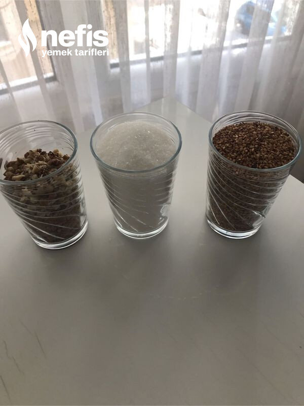

🍽️ 10-12 kişilik⏱️ Hazırlık: 5 dk🔥 Pişirme: 15 dk🏷️ Tatlı Tarifleri
Malzemeler
- 1 su bardak şeker
- 1 su bardak susam
- 1 su bardak fındık veya, fıstık, ceviz, badem
- 2-3 yemek kaşık pekmez
Hazırlanışı
- Önce susamları 3-4 dakika hafif kavuruyoruz.
- Tavamıza şekeri alıyoruz.
- Kavurmaya başlıyoruz.
- Karemalize olmaya başladığında susamları ilave ederek karıştırıyoruz.
- Ocağı kapatıp pekmezi, ceviz veya fıstık, fındık vs. İlave ediyoruz.
- Hızlıca karıştırıp yağlı kağıda dökerek üzerine yağlı kağıt koyarak oklava veya merdaneyle inceltiyoruz.
- Soğuyunca parçalara ayırarak saklama kabına alıyoruz.İstediğimiz şekilde,( kahve yanı, limonata vs) tüketiyoruz.Afiyet olsun 😊.